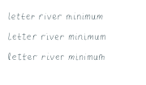
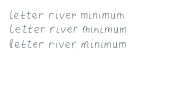

A handwriting engine & agent skill
Your handwriting,
for the next page.
Your notes are the starting point. Give your AI agent this prompt, bring your handwriting samples, and make a new page in your own style.
Copy. Paste into your AI agent. Bring your samples.
See a sample become a new pageA starting prompt, ready to go
Meet your next
writing assistant.
From a sample to a new page
More of your samples.
More of your own forms.
Your pages already contain different versions of the same letter. Inkform collects those real examples and keeps their shapes when writing new words.
The source forms
Distinct examples of the same letters.

Individual forms become a reusable profile.
A fresh piece of writing
The forms write a new page.

Real source choices, arranged into new words.
01 / Learn the writer
The hand comes
before the page.
A reusable profile begins with evidence. Each new document uses forms that have already been learned and reviewed.
- 01
Bring your samples
Bring photos, scans, or PDF pages, including repeated letters, complete sentences, hand-drawn graphs, and any crossed-out words. Originals stay local.
Your own handwriting → - 02
Collect & review
An agent works through your pages, reviews actual character variants in context, and records the forms and patterns it can support.
A reviewed profile → - 03
Calibrate the page
Compare the source shapes, check readable word spaces and graph strokes, and collect more real examples where needed. Check a print at Actual Size / 100%.
A comparison at print size → - 04
Write something new
Check the exact text and symbols against your profile, then export a PDF. Keep learning as you add more samples.
A profile you can reuse ↗
Training is local exemplar learning: fitted forms, reviewed variants, and supported measurements. A folder import alone is not a learned alphabet; no neural network is trained.
02 / Write with the profile
Your observed forms.
Ready for paper.
Choose from your real letter and arrow examples while keeping their construction intact. Repetition checks show where more samples would help. Keep words clearly separated and carry your sampled graph strokes into new diagrams. Include crossed-out restarts when they match your preference and sampled style. Smooth outlines and fresh pen strokes both stay vector in the PDF.
Inspect the demo PDF
- .pdf The print master
- Vector ink, physical page dimensions, checked bounds.
- .png A closer look
- Separate 300 dpi previews for reviewing each page.
- .json / .txt The content & record
- Original text, semantic structure, selected forms, and checks.
More forms / Fewer repeated patterns
Useful today.
Room to get closer.
The engine checks the file. People and agents still judge resemblance, spacing, and the page in their hands.
What you can build with
- Reusable local profiles. Reviewed forms, measured variation, source references, and immutable versions.
- Check for repeated shapes. Actual PDF paths are compared across the same and neighboring pages; more source forms are collected when needed.
- The writer's correction habits. Reviewed strikes or scribbles and partial word and math attempts, while the intended content stays intact.
- Repeatable vector output. Saved seeds, content sidecars, PDF object checks, and rendered previews.
Where the work continues
- Review remains part of training. Segmentation, fitted geometry, and correction counts need inspection.
- Real samples set the range. Sparse forms may repeat. Ordinary output preserves them instead of inventing curves. Connected cursive is still developing.
- Outlines have physical limits. New sizes, script forms, or stroke weights need compatible reviewed geometry.
- The print is the proof. File validity cannot establish a handwriting match. Compare actual-size samples and printed pages.
Which mathematical structures are supported?
Symbols, numbers, rows, relations, function calls, fractions, square roots, superscripts, subscripts, and limits with explicit left, right, or two-sided direction. Support still depends on your profile's reviewed forms and representation. The renderer preserves supplied content; solving and answer verification happen before rendering.
Read the document contract03 / Make it yours
Start with
your handwriting.
Install the local engine and agent skill. Bring a few useful pages, then let the agent guide the learn, review, and calibration loop.
Setup & developer instructionsnpm install -g @nazifbd/inkform
inkform setup
inkform skill installRuns locally with a Python engine. No cloud account or API key required.
“Learn from my handwriting samples, make a calibration page, then write a new document with my saved profile.”
Read the skillBuilt in the open
Help make the next
page a little better.
Work on geometry, spacing, adapters, math layout, or documentation. Use synthetic fixtures and keep personal handwriting out of public contributions.